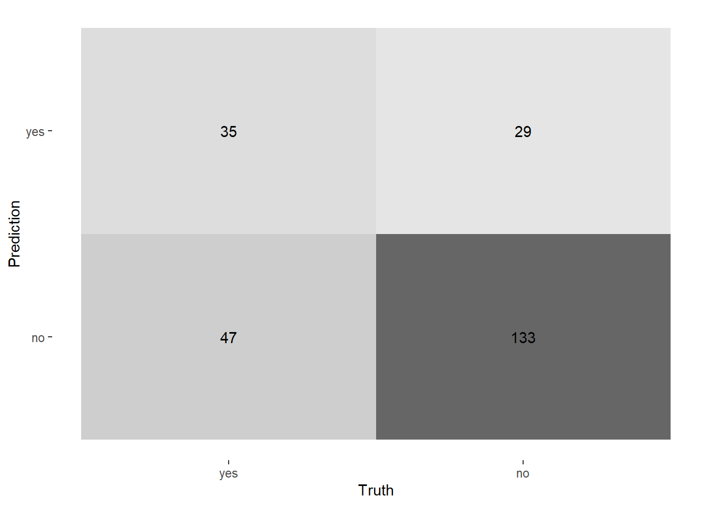
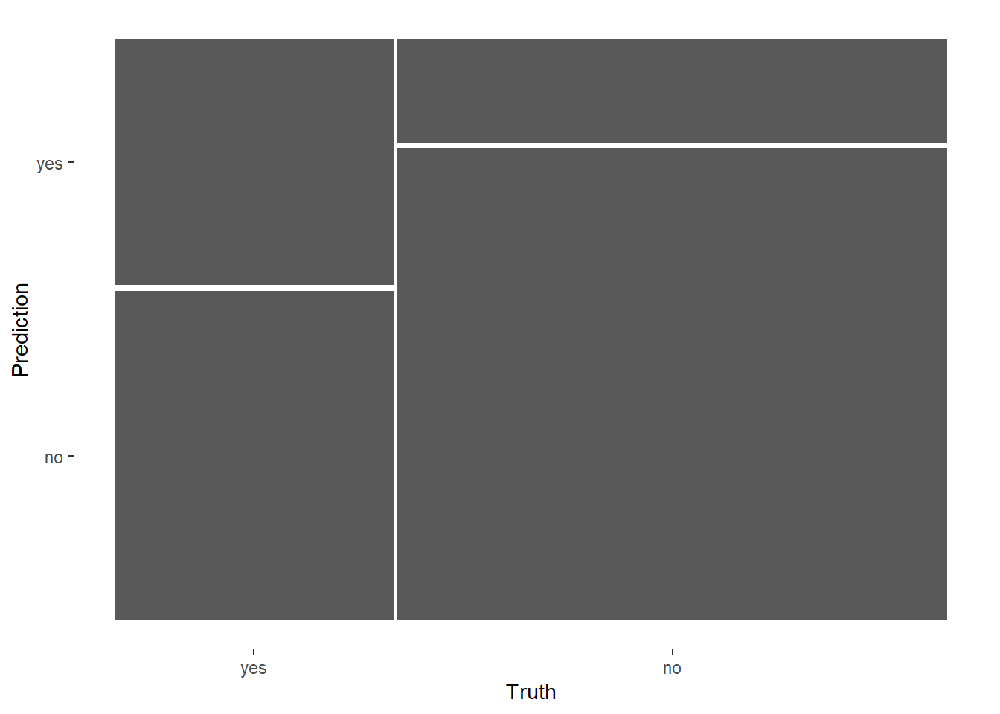
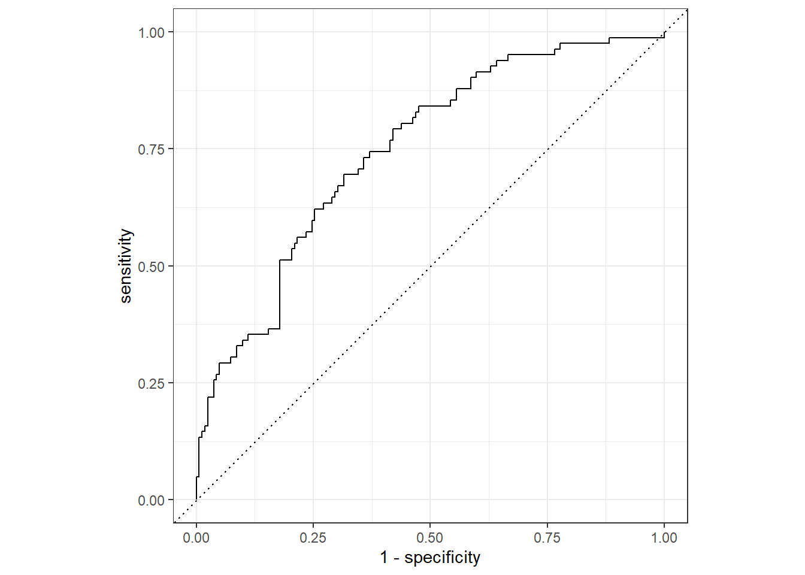
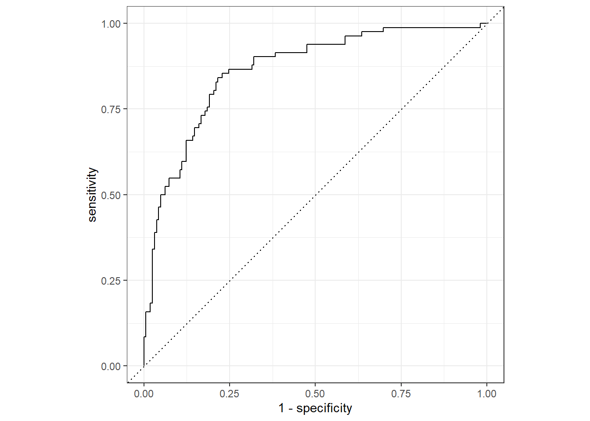

Last updated: 2022-11-16
Checks: 7 0
Knit directory: Misean/
This reproducible R Markdown analysis was created with workflowr (version 1.7.0). The Checks tab describes the reproducibility checks that were applied when the results were created. The Past versions tab lists the development history.
Great! Since the R Markdown file has been committed to the Git repository, you know the exact version of the code that produced these results.
Great job! The global environment was empty. Objects defined in the global environment can affect the analysis in your R Markdown file in unknown ways. For reproduciblity it’s best to always run the code in an empty environment.
The command set.seed(20221115) was run prior to running
the code in the R Markdown file. Setting a seed ensures that any results
that rely on randomness, e.g. subsampling or permutations, are
reproducible.
Great job! Recording the operating system, R version, and package versions is critical for reproducibility.
Nice! There were no cached chunks for this analysis, so you can be confident that you successfully produced the results during this run.
Great job! Using relative paths to the files within your workflowr project makes it easier to run your code on other machines.
Great! You are using Git for version control. Tracking code development and connecting the code version to the results is critical for reproducibility.
The results in this page were generated with repository version 4fd7495. See the Past versions tab to see a history of the changes made to the R Markdown and HTML files.
Note that you need to be careful to ensure that all relevant files for
the analysis have been committed to Git prior to generating the results
(you can use wflow_publish or
wflow_git_commit). workflowr only checks the R Markdown
file, but you know if there are other scripts or data files that it
depends on. Below is the status of the Git repository when the results
were generated:
Ignored files:
Ignored: .Rhistory
Ignored: .Rproj.user/
Untracked files:
Untracked: analysis/images/check-code.png
Untracked: analysis/images/communicating.png
Untracked: analysis/images/corporate-finance-inst.png
Untracked: analysis/images/create-account.png
Untracked: analysis/images/lightning.png
Untracked: analysis/images/meetings.png
Untracked: analysis/images/schedule-meeting.png
Untracked: analysis/images/setting-up.png
Untracked: analysis/images/sign-in.jpg
Untracked: analysis/images/zoom-on-mobile.webp
Untracked: analysis/images/zoom.png
Untracked: data/employee_data.rds
Untracked: data/home_sales.rds
Untracked: data/leads_df.rds
Untracked: data/loan_df.rds
Untracked: data/power_df.csv
Untracked: data/telecom_df.rds
Untracked: data/trip.csv
Untracked: donation-tracking-excel-templates (2).zip
Untracked: donation-tracking-excel-templates/
Untracked: kickstarter.zip
Untracked: kickstarter/
Unstaged changes:
Modified: README.md
Modified: analysis/_site.yml
Note that any generated files, e.g. HTML, png, CSS, etc., are not included in this status report because it is ok for generated content to have uncommitted changes.
These are the previous versions of the repository in which changes were
made to the R Markdown (analysis/Classification.Rmd) and
HTML (docs/Classification.html) files. If you’ve configured
a remote Git repository (see ?wflow_git_remote), click on
the hyperlinks in the table below to view the files as they were in that
past version.
| File | Version | Author | Date | Message |
|---|---|---|---|---|
| html | 4fd7495 | JJCoen | 2022-11-16 | Build site. |
| Rmd | 3ec87e6 | JJCoen | 2022-11-16 | add Data Analysis and Training |
telecom_df <- readRDS("./data/telecom_df.rds")# Create data split object
telecom_split <- initial_split(telecom_df, prop = 0.75,
strata = canceled_service)
# Create the training data
telecom_training <- telecom_split %>%
training()
# Create the test data
telecom_test <- telecom_split %>%
testing()
# Check the number of rows
nrow(telecom_training)[1] 731nrow(telecom_test)[1] 244# Specify a logistic regression model
logistic_model <- logistic_reg() %>%
# Set the engine
set_engine('glm') %>%
# Set the mode
set_mode('classification')
# Fit to training data
logistic_fit <- logistic_model %>%
fit(canceled_service ~ avg_call_mins + avg_intl_mins +
monthly_charges,
data = telecom_training)
# Print model fit object
logistic_fitparsnip model object
Call: stats::glm(formula = canceled_service ~ avg_call_mins + avg_intl_mins +
monthly_charges, family = stats::binomial, data = data)
Coefficients:
(Intercept) avg_call_mins avg_intl_mins monthly_charges
2.20133 -0.01087 0.02281 -0.00103
Degrees of Freedom: 730 Total (i.e. Null); 727 Residual
Null Deviance: 932
Residual Deviance: 803 AIC: 811Evaluating your model’s performance on the test data-set gives insights into how well your model predicts on new data sources. These insights will help you communicate your model’s value in solving problems or improving decision making.
Before you can calculate classification metrics such as sensitivity
or specificity, you must create a results tibble with the required
columns for yardstick metric functions.
In this exercise, you will use your trained model to predict the
outcome variable in the telecom_test dataset and combine it
with the true outcome values in the canceled_service
column.
predict() function to
create a tibble, class_preds, with predicted outcome
variable categories using the test data-set.prob_preds, with the estimated
probabilities for each category in the outcome variable using the test
data-set.telecom_test
data.class_preds and prob_preds tibbles
along the column axis.# Predict outcome categories
class_preds <- predict(logistic_fit, new_data = telecom_test,
type = 'class')
# Obtain estimated probabilities for each outcome value
prob_preds <- predict(logistic_fit, new_data = telecom_test,
type = 'prob')
# Combine test set results
telecom_results <- telecom_test %>%
select(canceled_service) %>%
bind_cols(class_preds, prob_preds)
# View results tibble
telecom_results# A tibble: 244 × 4
canceled_service .pred_class .pred_yes .pred_no
<fct> <fct> <dbl> <dbl>
1 yes yes 0.799 0.201
2 no no 0.113 0.887
3 yes yes 0.585 0.415
4 no no 0.406 0.594
5 no no 0.239 0.761
6 no no 0.227 0.773
7 no no 0.159 0.841
8 no no 0.148 0.852
9 no no 0.129 0.871
10 no no 0.183 0.817
# … with 234 more rowsIn the previous exercise, you calculated classification metrics from
a sample confusion matrix. The yardstick package was
designed to automate this process.
For classification models, yardstick functions require a
tibble of model results as the first argument. This should include the
actual outcome values, predicted outcome values, and estimated
probabilities for each value of the outcome variable.
yardstick function to create a
confusion matrix using the telecom_results tibble.conf_mat(telecom_results,
truth = canceled_service,
.pred_class) Truth
Prediction yes no
yes 35 29
no 47 133# Calculate the accuracy
accuracy(telecom_results, truth = canceled_service,
estimate = .pred_class)# A tibble: 1 × 3
.metric .estimator .estimate
<chr> <chr> <dbl>
1 accuracy binary 0.689sens(telecom_results, truth = canceled_service,
estimate = .pred_class)# A tibble: 1 × 3
.metric .estimator .estimate
<chr> <chr> <dbl>
1 sens binary 0.427spec(telecom_results, truth = canceled_service,
estimate = .pred_class)# A tibble: 1 × 3
.metric .estimator .estimate
<chr> <chr> <dbl>
1 spec binary 0.821The specificity of your logistic regression model is 0.895, which is more than double the sensitivity of 0.42. This indicates that your model is much better at detecting customers who will not cancel their telecommunications service versus the ones who will.
The yardstick package also provides the ability to
create custom sets of model metrics. In cases where the cost of
obtaining false negative errors is different from the cost of false
positive errors, it may be important to examine a specific set of
performance metrics.
Instead of calculating accuracy, sensitivity, and specificity separately, you can create your own metric function that calculates all three at the same time.
In this exercise, you will use the results from your logistic
regression model, telecom_results, to calculate a custom
set of performance metrics. You will also use a confusion matrix to
calculate all available binary classification metrics in
tidymodelsall at once.
Create a custom metric function named
telecom_metrics using the appropriate
yardstick function.
accuracy(), sens(), and
spec() functions in your custom metric function.Use your telecom_metrics() function to calculate
metrics on the telecom_results tibble.
Create a confusion matrix using the telecom_results
tibble.
Pass your confusion matrix to the summary() function
in base R.
# Create a custom metric function
telecom_metrics <- metric_set(accuracy, sens, spec)
# Calculate metrics using model results tibble
telecom_metrics(telecom_results, truth = canceled_service,
estimate = .pred_class)# A tibble: 3 × 3
.metric .estimator .estimate
<chr> <chr> <dbl>
1 accuracy binary 0.689
2 sens binary 0.427
3 spec binary 0.821# Create a confusion matrix
conf_mat(telecom_results,
truth = canceled_service,
estimate = .pred_class) %>%
# Pass to the summary() function
summary()# A tibble: 13 × 3
.metric .estimator .estimate
<chr> <chr> <dbl>
1 accuracy binary 0.689
2 kap binary 0.262
3 sens binary 0.427
4 spec binary 0.821
5 ppv binary 0.547
6 npv binary 0.739
7 mcc binary 0.266
8 j_index binary 0.248
9 bal_accuracy binary 0.624
10 detection_prevalence binary 0.262
11 precision binary 0.547
12 recall binary 0.427
13 f_meas binary 0.479Calculating performance metrics with the yardstick
package provides insight into how well a classification model is
performing on the test dataset. Most yardstick functions
return a single number that summarizes classification performance.
Many times, it is helpful to create visualizations of the confusion matrix to more easily communicate your results.
# Create a confusion matrix
conf_mat(telecom_results,
truth = canceled_service,
estimate = .pred_class) %>%
# Create a heat map
autoplot(type = 'heatmap')
# Create a confusion matrix
conf_mat(telecom_results,
truth = canceled_service,
estimate = .pred_class) %>%
# Create a heat map
autoplot(type = 'mosaic')
The mosaic plot clearly shows that your logistic regression model
performs much better in terms of specificity than sensitivity. You can
see that in the yes column, a large proportion of outcomes
were incorrectly predicted as no.
threshold_df, which contains the
sensitivity and specificity of your classification model across the
unique probability thresholds in telecom_results.threshold_df to to plot your model’s ROC
curve.telecom_results tibble.# Calculate metrics across thresholds
threshold_df <- telecom_results %>%
roc_curve(truth = canceled_service, .pred_yes)
# View results
threshold_df# A tibble: 246 × 3
.threshold specificity sensitivity
<dbl> <dbl> <dbl>
1 -Inf 0 1
2 0.0108 0 1
3 0.0174 0 0.988
4 0.0329 0.00617 0.988
5 0.0353 0.0123 0.988
6 0.0639 0.0185 0.988
7 0.0649 0.0247 0.988
8 0.0666 0.0309 0.988
9 0.0693 0.0370 0.988
10 0.0696 0.0432 0.988
# … with 236 more rows# Plot ROC curve
threshold_df %>%
autoplot(roc_curve(truth = canceled_service,
.pred_yes))
# Calculate ROC AUC
roc_auc(telecom_results,
truth = canceled_service,
.pred_yes)# A tibble: 1 × 3
.metric .estimator .estimate
<chr> <chr> <dbl>
1 roc_auc binary 0.746The last_fit() function is designed to streamline the
modeling workflow in tidymodels. Instead of training your
model on the training data and building a results tibble using the test
data, last_fit() accomplishes this with one function.
In this exercise, you will train the same logistic regression model as you fit in the previous exercises, except with the last_fit() function.
Pass your logistic_model object into the last_fit()
function.
Predict canceled_service using avg_call_mins, avg_intl_mins, and monthly_charges.
Display the performance metrics of your trained model,
telecom_last_fit.
# Specify the model
logistic_model <- logistic_reg()
# Train model with last_fit()
telecom_last_fit <- logistic_model %>%
last_fit(canceled_service ~ avg_call_mins + avg_intl_mins + monthly_charges,
split = telecom_split)
# View test set metrics
telecom_last_fit %>%
collect_metrics()# A tibble: 2 × 4
.metric .estimator .estimate .config
<chr> <chr> <dbl> <chr>
1 accuracy binary 0.689 Preprocessor1_Model1
2 roc_auc binary 0.746 Preprocessor1_Model1Using the last_fit() modeling workflow also saves time
in collecting model predictions. Instead of manually creating a tibble
of model results, there are helper functions that extract this
information automatically.
In this exercise, you will use your trained model,
telecom_last_fit, to create a tibble of model results on
the test data-set as well as calculate custom performance metrics.
last_fit_results, that has the
predictions from your telecom_last_fit model.last_fit_metrics,
using the metric_set() function.# Collect predictions
last_fit_results <- telecom_last_fit %>%
collect_predictions()
# View results
last_fit_results# A tibble: 244 × 7
id .pred_yes .pred_no .row .pred_class canceled_serv…¹ .config
<chr> <dbl> <dbl> <int> <fct> <fct> <chr>
1 train/test split 0.799 0.201 7 yes yes Prepro…
2 train/test split 0.113 0.887 8 no no Prepro…
3 train/test split 0.585 0.415 12 yes yes Prepro…
4 train/test split 0.406 0.594 13 no no Prepro…
5 train/test split 0.239 0.761 20 no no Prepro…
6 train/test split 0.227 0.773 25 no no Prepro…
7 train/test split 0.159 0.841 26 no no Prepro…
8 train/test split 0.148 0.852 29 no no Prepro…
9 train/test split 0.129 0.871 32 no no Prepro…
10 train/test split 0.183 0.817 36 no no Prepro…
# … with 234 more rows, and abbreviated variable name ¹canceled_service# Custom metrics function
last_fit_metrics <- metric_set(accuracy, sens,
spec, roc_auc)
# Calculate metrics
last_fit_metrics(last_fit_results,
truth = canceled_service,
estimate = .pred_class,
.pred_yes)# A tibble: 4 × 3
.metric .estimator .estimate
<chr> <chr> <dbl>
1 accuracy binary 0.689
2 sens binary 0.427
3 spec binary 0.821
4 roc_auc binary 0.746In this exercise, you will use the last_fit() function
to train a logistic regression model and evaluate its performance on the
test data by assessing the ROC curve and the area under the ROC
curve.
Similar to previous exercises, you will predict
canceled_service in the telecom_df data, but
with an additional predictor variable to see if you can improve model
performance.
The telecom_split object contains the instructions for
randomly splitting the telecom_df tibble into training and
test sets. The logistic_model object is a
parsnip specification of a logistic regression model.
canceled_service using
avg_call_mins, avg_intl_mins,
monthly_charges, and months_with_company.# Train a logistic regression model
logistic_fit <- logistic_model %>%
last_fit(canceled_service ~ avg_call_mins + avg_intl_mins + monthly_charges + months_with_company,
split = telecom_split)
# Collect metrics
logistic_fit %>%
collect_metrics()# A tibble: 2 × 4
.metric .estimator .estimate .config
<chr> <chr> <dbl> <chr>
1 accuracy binary 0.791 Preprocessor1_Model1
2 roc_auc binary 0.864 Preprocessor1_Model1# Collect model predictions
logistic_fit %>%
collect_predictions() %>%
# Plot ROC curve
roc_curve(truth = canceled_service, .pred_yes) %>%
autoplot()
\(\rightarrow\) Adding the
months_with_company predictor variable increased your area
under the ROC curve from 0.783 in your previous model to 0.854!
sessionInfo()R version 4.2.1 (2022-06-23 ucrt)
Platform: x86_64-w64-mingw32/x64 (64-bit)
Running under: Windows 10 x64 (build 22000)
Matrix products: default
locale:
[1] LC_COLLATE=English_United States.utf8
[2] LC_CTYPE=English_United States.utf8
[3] LC_MONETARY=English_United States.utf8
[4] LC_NUMERIC=C
[5] LC_TIME=English_United States.utf8
attached base packages:
[1] stats graphics grDevices utils datasets methods base
other attached packages:
[1] yardstick_1.0.0 workflowsets_0.2.1 workflows_0.2.6 tune_0.2.0
[5] rsample_1.0.0 parsnip_1.0.0 modeldata_0.1.1 infer_1.0.2
[9] dials_1.0.0 scales_1.2.1 broom_1.0.0 tidymodels_0.2.0
[13] forcats_0.5.1 stringr_1.4.1 purrr_0.3.5 readr_2.1.3
[17] tidyr_1.2.1 tibble_3.1.8 tidyverse_1.3.1 recipes_0.2.0
[21] caret_6.0-92 lattice_0.20-45 skimr_2.1.4 kableExtra_1.3.4
[25] data.table_1.14.2 visdat_0.5.3 ggplot2_3.3.6 dplyr_1.0.10
[29] workflowr_1.7.0
loaded via a namespace (and not attached):
[1] colorspace_2.0-3 ellipsis_0.3.2 class_7.3-20
[4] rprojroot_2.0.3 base64enc_0.1-3 fs_1.5.2
[7] rstudioapi_0.13 farver_2.1.1 furrr_0.3.0
[10] listenv_0.8.0 prodlim_2019.11.13 fansi_1.0.3
[13] lubridate_1.8.0 xml2_1.3.3 codetools_0.2-18
[16] splines_4.2.1 knitr_1.39 jsonlite_1.8.2
[19] pROC_1.18.0 dbplyr_2.2.1 compiler_4.2.1
[22] httr_1.4.3 backports_1.4.1 assertthat_0.2.1
[25] Matrix_1.4-1 fastmap_1.1.0 cli_3.3.0
[28] later_1.3.0 htmltools_0.5.2 tools_4.2.1
[31] gtable_0.3.1 glue_1.6.2 reshape2_1.4.4
[34] Rcpp_1.0.9 cellranger_1.1.0 jquerylib_0.1.4
[37] DiceDesign_1.9 vctrs_0.4.1 svglite_2.1.0
[40] nlme_3.1-157 iterators_1.0.14 timeDate_3043.102
[43] gower_1.0.0 xfun_0.31 globals_0.15.1
[46] ps_1.7.1 rvest_1.0.2 lifecycle_1.0.3
[49] future_1.26.1 getPass_0.2-2 MASS_7.3-57
[52] ipred_0.9-13 hms_1.1.2 promises_1.2.0.1
[55] parallel_4.2.1 yaml_2.3.5 sass_0.4.1
[58] rpart_4.1.16 stringi_1.7.8 highr_0.9
[61] foreach_1.5.2 lhs_1.1.5 hardhat_1.2.0
[64] lava_1.6.10 repr_1.1.4 rlang_1.0.6
[67] pkgconfig_2.0.3 systemfonts_1.0.4 evaluate_0.17
[70] labeling_0.4.2 processx_3.7.0 tidyselect_1.2.0
[73] parallelly_1.32.0 plyr_1.8.7 magrittr_2.0.3
[76] R6_2.5.1 generics_0.1.3 DBI_1.1.3
[79] pillar_1.8.1 haven_2.5.0 whisker_0.4
[82] withr_2.5.0 survival_3.3-1 nnet_7.3-17
[85] future.apply_1.9.0 modelr_0.1.8 crayon_1.5.2
[88] utf8_1.2.2 tzdb_0.3.0 rmarkdown_2.14
[91] grid_4.2.1 readxl_1.4.0 callr_3.7.2
[94] git2r_0.30.1 ModelMetrics_1.2.2.2 reprex_2.0.1
[97] digest_0.6.29 webshot_0.5.3 httpuv_1.6.5
[100] GPfit_1.0-8 stats4_4.2.1 munsell_0.5.0
[103] viridisLite_0.4.1 bslib_0.3.1